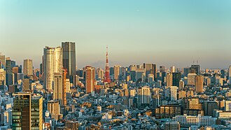

東京
伝統と最新カルチャーが同居する大都市。浅草、渋谷、新宿などを効率よく巡れます。
RUSSIAN GUIDE IN JAPAN
レーナはロシア語話者の方向けに、日本の都市文化、歴史、自然、温泉まで ご希望に合わせて案内するプライベートガイドです。初めての訪日でも、 移動・食事・体験予約を含めて安心して旅を楽しめるようサポートします。
相談する日本での旅行体験を、言葉の不安なく楽しんでいただくことを大切にしています。 観光地の案内だけでなく、文化背景の説明、写真スポット提案、交通案内、 買い物時の通訳まで一貫して対応します。短期旅行から複数都市周遊まで、 旅のスタイルに合わせたオーダーメイドが可能です。
気になる都市をクリックすると、個別ギャラリーページをご覧いただけます。
画像提供: Wikimedia Commons（各個別ページに出典リンクを記載）
到着直後の移動やホテルチェックインをロシア語でサポートします。
ご希望に合わせて、都市散策から郊外ツアーまで柔軟にアレンジします。
買い物時の通訳やおすすめ店舗の提案を行います。
温泉地での過ごし方、入浴マナー、景観スポットを組み合わせて心身を整える旅を提案します。
時期に合わせて地域の祭りやイベントを組み込み、日本文化の熱気を体感できる計画を作成します。
茶道、和菓子、書道、工芸などの体験を通して、観光だけではない深い日本理解をサポートします。
料金は時期・人数・移動範囲・通訳範囲により変動します。詳細見積りはお問い合わせください。
日程・人数・希望エリアを添えて、お気軽にご連絡ください。
Email: lena.guide.jp@example.com